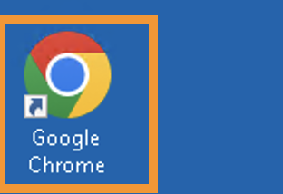
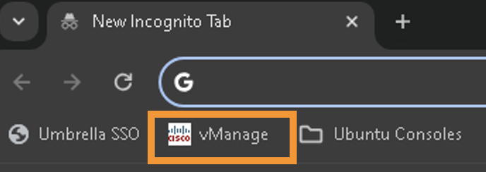
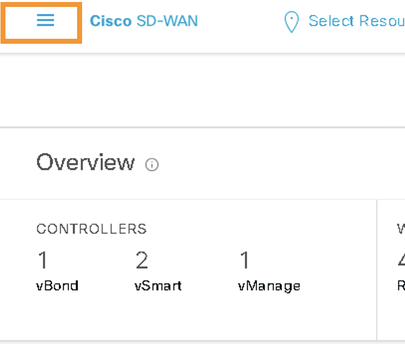
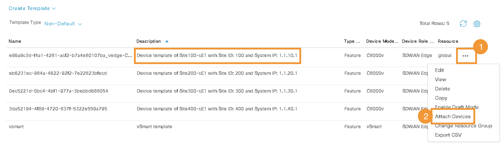
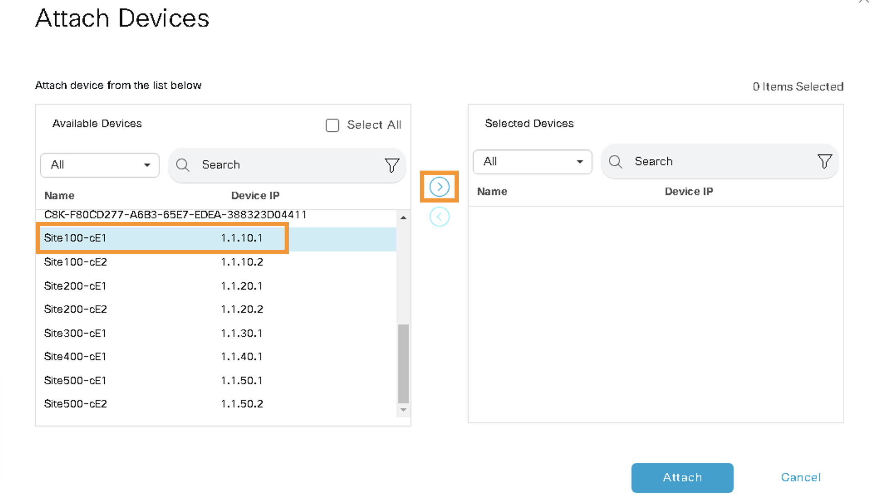
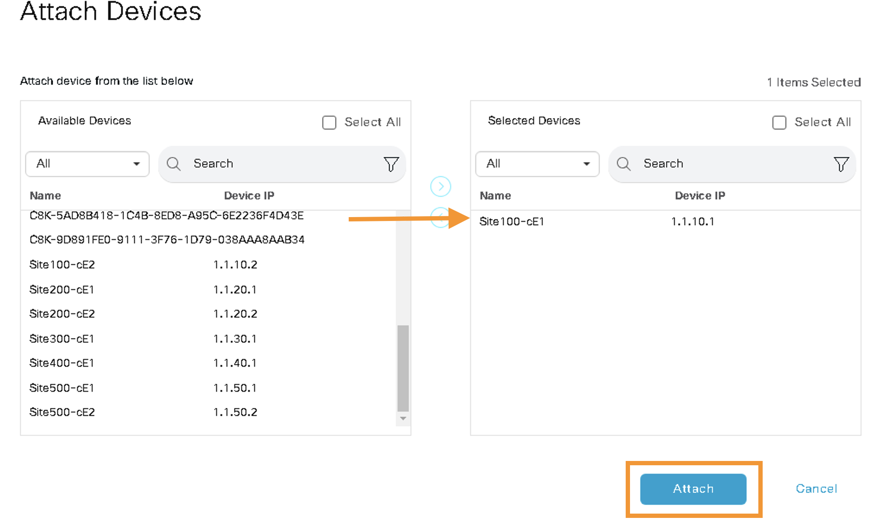
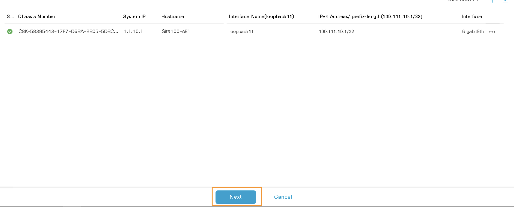
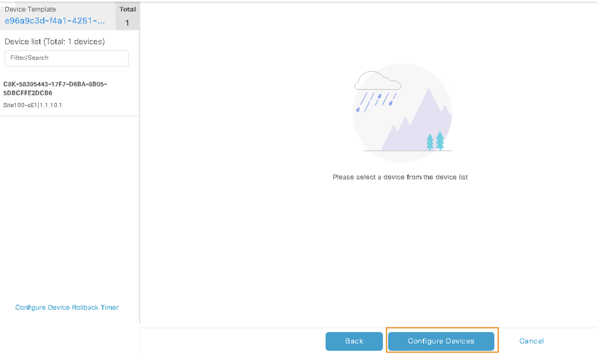

Task 2 - Device Templates
In this Task we will add cEdeges (Site-100, Site-300 and Site-400) to their respective Device templates. The device templates have been preconfigured with configurations required for functional SD-WAN Fabric. The attachment of the cEdge to it's Device templates is performed on the vManage GUI via a web browser.
Step 1 - vManage GUI
- Logon to vManage GUI by launching Google Chrome on the RDP / Jumphost

-
Open Chrome and click
vManageon the boookmark bar  -
Logon to vManage using below credentials:
- Username:
admin - Password:
C1sco12345
- Username:
Step 2 - Device Template for cEdges
-
After logging into vManage, click on the three bars at the top left side as shown in below screenshot: 
-
Then navigate to Configuration > Templates as shown below:

- On the
Configuration - Templatespage, click on the Device Templates as shown below:

The Device Template page will list various control and cEdge devices. We will only attach the device template to their respective cEdge as per below table. The cEdge devices can be recognized by their Description:
| Description | vEdge |
|---|---|
| Device template of Site100-cE1 with Site ID: 100 and System IP: 1.1.10.1 | Site100-cE1 |
| Device template of Site300-cE1 with Site ID: 300 and System IP: 1.1.30.1 | Site300-cE1 |
| Device template of Site400-cE1 with Site ID: 400 and System IP: 1.1.40.1 | Site400-cE1 |
Note: Please don't add Site200-CE1 to any template
- On the
Device Templatespage, locate the Site100-cE1 device from its description and click on the the three dots (...) on the right side as shown below:

- Then on
Attach Devicespage scroll down to or Search forSite100-cE1to select it with the Right arrow (>) as shown below:

- After selecting the Site100-cE1, click on
Attach:

- On the next page, click
Next:

- And lastly click on
Configure Devicesto attach the template configurations to cEdge device:

- Wait for task to be successfull

| Note: |
|---|
Above screenshots are for Site-100 cE1 only. You must repeat these tasks for Site300-cE1 and Site400-cE1. |